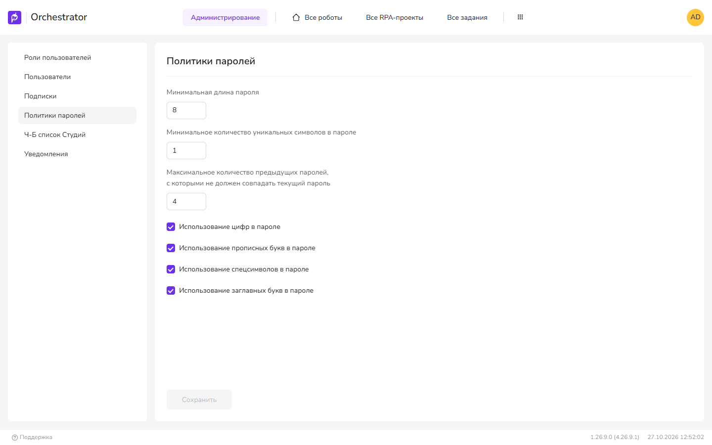

Безопасность
На странице описаны шифрование паролей в конфигурации служб, хранение секретов в HashiCorp Vault, учётные записи в CyberArk и Vault, параметры TLS и контроль изменения конфигурационных файлов.
Параметры задаются в файле конфигурации службы — appsettings.ProdLinux.json (Linux) или appsettings.ProdWin.json (Windows) в её каталоге; секции Vault, CyberArk и Security относятся к WebApi. В Docker параметр задаётся переменной окружения сервиса в docker-compose.yml, уровни имени разделяются двойным подчёркиванием: ConfigPasswordEncryptor__Algorithm, CyberArk__BaseUrl. Переменные PRIMOSALT, PRIMOSIGNINGKEY и VAULT_* задаются только в окружении службы: на Linux — строкой Environment= в юните, в Docker — в разделе environment сервиса. После изменения перезапустите службу; в Docker выполните sudo docker compose up -d. Порядок чтения источников — на странице Параметры конфигурации.
Шифрование паролей в конфигах
Пароли и ключи в конфигах служб хранятся зашифрованными. Служба расшифровывает их при старте. Исключения: среда Development и режим Secrets:External=1 (Vault) — в этих случаях значения используются без расшифровки.
Шифруются:
- пароли БД в строках подключения;
RabbitMQ:PasswordиRabbitMQ:SslCertPassphrase;ActiveDirectory:MultyForest:*:AdminPassword,OpenId:KeyCloak:*:ClientSecret;Tenants:IncomingEmail:Password,Email:FromPassword(Notifications);RobotDeployment:SslCertPasswordиRobotDeployment:OrchPassword;CyberArk:Password,NuGet:ApiKey,FileStore:Minio:SecretKey,Redis:Password;- пароль сертификата Kestrel.
| Параметр / переменная | Назначение | По умолчанию |
|---|---|---|
ConfigPasswordEncryptor:Algorithm | AES или RSA. Должен совпадать с утилитой, которой выполнено шифрование | не задан → AES (в Docker-образах AES) |
переменная окружения PRIMOSALT | Собственная соль для AES. Если задана, должна быть одинаковой на всех серверах служб и агентов | — |
переменные PRIMOSIGNINGKEY, PRIMOISSUER, PRIMOAUDIENCE | Ключ подписи и реквизиты JWT-токенов. Читаются всеми службами, которые проверяют токены, — задавайте одинаково | issuer LToolsOrchestratorWebApi, audience LToolsOrchestratorUi |
Для промышленной установки задайте свои PRIMOSALT и PRIMOSIGNINGKEY и зашифруйте ими пароли. В Docker соль задаётся до запроса лицензии — см. Установку в Docker.
Пароль сертификата Kestrel (Kestrel:Endpoints:<имя>:Certificate:Password) расшифровывается, только если ConfigPasswordEncryptor:Algorithm явно равен AES или RSA. Без параметра пароль используется без расшифровки, в открытом виде.
Как зашифровать пароль
- Распакуйте архив
primo-rpa-orchestrator-passwordencryptor-<версия>-linux.zipили…-windows.zipна любой машине и запуститеPrimo.Orchestrator.PasswordEncryptor(для RSA —Primo.Orchestrator.RsaPasswordEncryptor). На Linux перед запуском выполнитеchmod +x Primo.Orchestrator.PasswordEncryptor. Утилита запущена и ожидает ввода; приглашение не выводится. - Введите пароль одной строкой и нажмите Enter. Если
PRIMOSALTна этой машине не задан, а на серверах задан, введите через пробел пароль и соль. Утилита выводит строку после «Copy following string:» и для проверки — расшифровку. - Скопируйте зашифрованную строку в конфигурацию службы (в Docker — в значение переменной окружения). Значение параметра заменено зашифрованной строкой.
- Перезапустите службу. В журнале службы нет ошибок расшифровки, подключение к БД, RabbitMQ или AD проходит.

HashiCorp Vault
Vault используется в трёх ролях.
1. Хранилище секретов служб
Включается параметром Secrets:External=1 в конфигурации каждой службы, которая читает секреты из Vault (в Docker — Secrets__External: 1; в образе WebApi переменная задана значением False). Значение 0 (БД секретов) устарело. Пароли, ключи и учётные записи служба получает из Vault, а не из конфига. Подключение к Vault задаётся только переменными окружения.
| Переменная | Назначение |
|---|---|
VAULT_URL | Адрес Vault |
VAULT_TOKEN | Токен. Если не задан — вход по VAULT_USER_NAME / VAULT_PASSWORD (метод userpass) |
VAULT_MOUNT_POINT | Точка монтирования KV v2 (и метода userpass) |
VAULT_PATH | Путь к секрету службы |
Каждую переменную можно задать с префиксом службы: WEBAPI_, ROBOTLOGS_, STATES_, NOTIFICATIONS_, ANALYTIC_, LICENSES_, QUEUES_, LOGEVENTSWEBHOOK_, AGENT_ — например, WEBAPI_VAULT_PATH. Без префикса значение общее.
Ключи внутри секрета повторяют имена параметров конфига: RabbitMQ:Password, CyberArk:Password, FileStore:Minio:SecretKey и т. п. Для WebApi учётные записи AD находятся в подпутях ad/<домен> (ключи AdAdminUserName, AdAdminPassword), почта тенантов — в tenant/<Id тенанта> (TenantIncomingEmailUserName, TenantIncomingEmailLogin, TenantIncomingEmailPassword).
2. Учётные записи ресурсов и RDP-пользователей
Ресурс типа Credentials и RDP-пользователь машины робота могут ссылаться на учётную запись в Vault. В UI4 в форме RDP-пользователя машины — поля Тип внешнего хранения и Учетная запись Vault, в ресурсе — Тип внешнего хранилища и Учетная запись Vault. Учётные записи RDP в Vault появились в 1.26.8.
| Параметр (WebApi) | Назначение | По умолчанию |
|---|---|---|
Vault:AssetsCredentialsPath | Подпуть с учётными записями для ресурсов | asset |
Vault:AllCredentialsPath | Подпуть с учётными записями, из которого выбираются RDP-пользователи машин | credentials |
Подключение — те же переменные VAULT_* с префиксом WEBAPI_; включать Secrets:External для этого не требуется.
3. Keytab для SSO
См. ActiveDirectory:KerberosKeytabVault на странице Вход и доступ.
Клиент Vault в службах не проверяет сертификат сервера Vault (принимается любой). Защищайте канал до Vault сетевыми средствами.
CyberArk: секция CyberArk
Ресурсы типа Credentials могут хранить логин и пароль в CyberArk. Поле в форме ресурса UI4 — Учетная запись CyberArk. Секция задаётся в конфигурации WebApi.
Параметр (внутри CyberArk) | Назначение | По умолчанию |
|---|---|---|
BaseUrl | Адрес API CyberArk | — |
LogonType | Тип входа: 0 — CyberArk, 1 — LDAP, 2 — RADIUS, 3 — Windows | 0 |
UserName, Password | Учётная запись API, пароль зашифрован | — |
Timeout | Таймаут запросов, мс | 2000 |
TLS и сертификаты
| Где | Параметры | По умолчанию |
|---|---|---|
| Kestrel служб | Kestrel:EndPoints:ExternalHttps:Url и …:Certificate — HTTPS-точка службы; Kestrel:EndPoints:InternalHttp:Url — HTTP | в Docker-образах только InternalHttp на порту 8080 |
| nginx | Сертификат и ключ в nginx/certificates. С 1.26.9 во всех nginx.*.conf разрешены только TLS 1.2 и 1.3 | — |
| PostgreSQL | PostgresWithSslOptions:UseSsl, ClientCertPath, ClientCertKeyPath | false |
| RabbitMQ | RabbitMQ:UseSsl, SslServerName (CN/SAN сертификата сервера), SslCertPath (client_key.p12), SslCertPassphrase | false |
| AD | UseSsl, AcceptUntrustedCertificate в ActiveDirectory:MultyForest:* | false |
| S3 (MinIO) | FileStore:Minio:SSL, IgnoreValidateCert | false |
| Агент и робот | RobotDeployment:SslCertPassword — пароль сертификата, который устанавливается вместе с роботом | — |
| CORS WebApi | Security:EnabledOrigins — список разрешённых источников. Пусто — политика CORS не включается | пусто |
Контроль изменения конфигов
Службы WebApi, RobotLogs, States, Notifications, Analytic, Licenses, Queues, LogEventsWebhook, RDP2 и агент при каждом старте читают appsettings.json и appsettings.<ASPNETCORE_ENVIRONMENT>.json и передают их в Оркестратор. Если содержимое изменилось с прошлого запуска, в журнал пишется событие с кодом 2 «Конфигурационный файл изменен» (тип «Инцидент безопасности»).
- Откройте Журналы → События оркестратора и отфильтруйте события по типу Инцидент безопасности. В списке остались события «Конфигурационный файл изменен».
- В событии нажмите Просмотреть конфигурационный файл. Скачивается текст обоих файлов, разделённых строкой
<*SPLIT*>; его можно сравнить с текущими файлами.
Контролируются только файлы. Значения из переменных окружения (так настраиваются Docker-образы, где оба файла пустые {}) в проверку не попадают.
Пример
Фрагмент файла конфигурации WebApi; секции добавляются к имеющимся в файле.
{
"ConfigPasswordEncryptor": { "Algorithm": "AES" },
"Secrets": { "External": 1 },
"Vault": { "AssetsCredentialsPath": "asset", "AllCredentialsPath": "credentials" },
"CyberArk": {
"BaseUrl": "https://cyberark.example.local",
"LogonType": 0,
"UserName": "orch-api",
"Password": "<зашифрованный пароль>",
"Timeout": 2000
},
"Security": { "EnabledOrigins": [ "https://orch.example.local:44392" ] }
}В Docker те же параметры — переменные окружения сервиса web-api, например CyberArk__BaseUrl, Security__EnabledOrigins__0.
Переменные окружения для Vault (Linux — в юните службы, по одной строке Environment= на переменную; Docker — в разделе environment сервиса):
WEBAPI_VAULT_URL=https://vault.example.local:8200
WEBAPI_VAULT_MOUNT_POINT=orchestrator
WEBAPI_VAULT_PATH=webapi
WEBAPI_VAULT_USER_NAME=webapi
WEBAPI_VAULT_PASSWORD=<пароль>Как проверить
- После смены паролей перезапустите службу. Служба стартует,
/healthотвечает200. - С Vault: в форме RDP-пользователя машины выберите в поле Тип внешнего хранения значение Vault. Список Учетная запись Vault заполнен учётными записями из
credentials. - Измените любой параметр в файле конфигурации службы и перезапустите её. В журнале Журналы → События оркестратора появилось событие «Конфигурационный файл изменен».